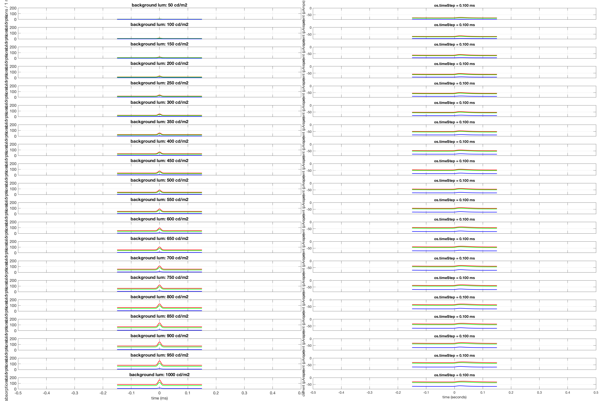
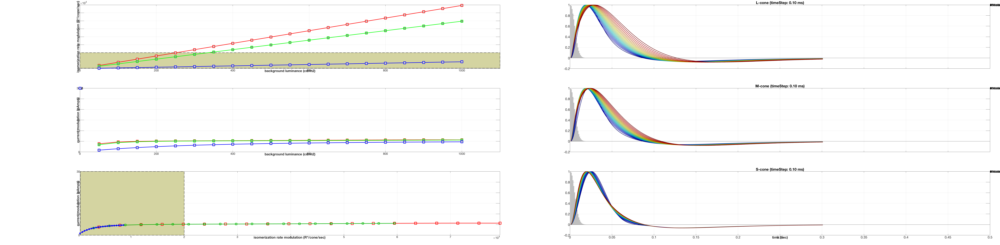

function t_osCurrentsVsLuminanceLevel
stimulusSamplingInterval = 1/1000;
oiTimeAxis = 0:stimulusSamplingInterval:0.3;
oiTimeAxis = oiTimeAxis - mean(oiTimeAxis);
stimulusRampTau = 5/1000;
modulationGain = 1.0;
modulationFunction = modulationGain * exp(-0.5*(oiTimeAxis/stimulusRampTau).^2);
noOptics = false;
theOI = oiGenerate(noOptics);
luminancesExamined = [50:50:1000];
osTimeSteps = [0.1]/1000;
for lumIndex = 1:numel(luminancesExamined)
FOV = 1.0;
theScene = uniformFieldSceneCreate(FOV, luminancesExamined(lumIndex));
oiBackground = oiCompute(theOI, theScene);
oiModulated = oiBackground;
pos = oiGet(oiBackground, 'spatial support', 'microns');
modulationRegion.radiusInMicrons = 0.5*max(pos(:));
theOIsequenceArray{lumIndex} = oiSequence(oiBackground, oiModulated, oiTimeAxis, modulationFunction, 'modulationRegion', modulationRegion);
end
mosaicSize = nan;
integrationTime = 1/1000;
photonNoise = 'none';
osTimeStep = 1/1000;
osNoise = 'none';
theConeMosaic = coneMosaicGenerate(mosaicSize, photonNoise, osNoise, integrationTime, osTimeStep);
eyeMovementsNum = theOIsequenceArray{1}.maxEyeMovementsNumGivenIntegrationTime(theConeMosaic.integrationTime);
instancesNum = 1;
emPaths = zeros(instancesNum, eyeMovementsNum,2);
for instanceIndex = 1:instancesNum
emPaths(instanceIndex, :, :) = theConeMosaic.emGenSequence(eyeMovementsNum)*0;
end
hFig = figure(1); clf;
set(hFig, 'Position', [10 10 1800 1200]);
subplotPosVectors = NicePlot.getSubPlotPosVectors(...
'rowsNum', numel(luminancesExamined), ...
'colsNum', numel(osTimeSteps)+1, ...
'heightMargin', 0.02, ...
'widthMargin', 0.02, ...
'leftMargin', 0.03, ...
'rightMargin', 0.00, ...
'bottomMargin', 0.03, ...
'topMargin', 0.01);
subplotPosVectors2 = NicePlot.getSubPlotPosVectors(...
'rowsNum', 3, ...
'colsNum', 1+numel(osTimeSteps), ...
'heightMargin', 0.08, ...
'widthMargin', 0.07, ...
'leftMargin', 0.08, ...
'rightMargin', 0.00, ...
'bottomMargin', 0.04, ...
'topMargin', 0.01);
isomerizationsRange = [0 200];
luminanceRange = [0 1100];
luminanceTicks = [0:200:1100];
pCurrentRange = [-85 0];
pCurrentModulationRange = [0 30];
for lumIndex = 1: numel(luminancesExamined)
for osTimeStepIndex = 0:numel(osTimeSteps)
if (osTimeStepIndex > 0)
theConeMosaic.os.timeStep = osTimeSteps(osTimeStepIndex);
end
[isomerizations, photocurrents, tmpLMSfilters] = ...
theConeMosaic.computeForOISequence(theOIsequenceArray{lumIndex}, ...
'emPaths', emPaths, ...
'currentFlag', true);
timeAxis = theConeMosaic.timeAxis + theOIsequenceArray{lumIndex}.timeAxis(1);
timeRange = [timeAxis(1) timeAxis(end)];
timeRange = [-500 500]/1000;
if (lumIndex == 1) && (osTimeStepIndex == 1)
LMSfilters = zeros(numel(luminancesExamined), numel(osTimeSteps), size(tmpLMSfilters,1), size(tmpLMSfilters,2));
end
if (osTimeStepIndex > 0)
LMSfilters(lumIndex, osTimeStepIndex, :,:) = tmpLMSfilters;
timeAxisLMSfilters(lumIndex, osTimeStepIndex,:) = (1:size(tmpLMSfilters,1)) * (timeAxis(2)-timeAxis(1));
end
if (osTimeStepIndex == 0)
figure(hFig);
subplot('Position', subplotPosVectors(lumIndex, 1).v);
plot(timeAxis, squeeze(isomerizations(1,1,1,:)), 'r-', 'LineWidth', 1.5);
hold on;
plot(timeAxis, squeeze(isomerizations(1,1,2,:)), 'g-', 'LineWidth', 1.5);
plot(timeAxis, squeeze(isomerizations(1,1,3,:)), 'b-', 'LineWidth', 1.5);
set(gca, 'XLim', timeRange);
title(sprintf('background lum: %d cd/m2', luminancesExamined(lumIndex)));
ylabel(sprintf('absorptions / %d ms', theConeMosaic.integrationTime*1000), 'FontSize', 12);
set(gca, 'YLim', isomerizationsRange, 'FontSize', 12);
if (lumIndex < numel(luminancesExamined))
set(gca, 'XTickLabel', {});
else
xlabel('time (ms)', 'FontSize', 12);
end
grid on; box on;
drawnow;
else
figure(hFig);
subplot('Position', subplotPosVectors(lumIndex, osTimeStepIndex+1).v);
plot(timeAxis, squeeze(photocurrents(1,1,1,:)), 'r-', 'LineWidth', 1.5);
hold on;
plot(timeAxis, squeeze(photocurrents(1,1,2,:)), 'g-', 'LineWidth', 1.5);
plot(timeAxis, squeeze(photocurrents(1,1,3,:)), 'b-', 'LineWidth', 1.5);
set(gca, 'XLim', timeRange);
title(sprintf('os.timeStep = %2.3f ms', theConeMosaic.os.timeStep*1000));
if (osTimeStepIndex == 1)
ylabel('current (pAmps)');
end
set(gca, 'YLim', pCurrentRange);
if (osTimeStepIndex > 1)
set(gca, 'YTickLabel', {});
end
if (lumIndex == numel(luminancesExamined))
xlabel('time (seconds)');
else
set(gca, 'XTickLabel', {});
end
set(gca, 'FontSize', 10);
grid on; box on;
drawnow;
end
if (osTimeStepIndex == 1)
for coneIndex = 1:3
photocurrent = squeeze(photocurrents(1,1,coneIndex,:));
isomerizationRate = squeeze(isomerizations(1,1,coneIndex,:)) / theConeMosaic.integrationTime;
baselineP = photocurrent(end);
baselineIR = isomerizationRate(end);
if (baselineP < 0)
deltaPhotocurrent = max(photocurrent(:)) - baselineP;
else
deltaPhotocurrent = 0;
end
photoCurrentModulation(lumIndex,coneIndex) = deltaPhotocurrent;
isomerizationRateModulation(lumIndex,coneIndex) = max(isomerizationRate(:))-baselineIR;
end
end
end
end
hFig2 = figure(2); clf;
set(hFig2, 'Position', [10 10 900 1290], 'Color', [1 1 1]);
modelRegime = [500 20000];
modelRegimeY = [modelRegime(1) modelRegime(1) modelRegime(2) modelRegime(2) modelRegime(1)];
modelRegimeX = [luminanceRange(1) luminanceRange(2) luminanceRange(2) luminanceRange(1) pCurrentModulationRange(1)];
subplot('Position', subplotPosVectors2(1,1).v);
hold on
patch(modelRegimeX, modelRegimeY, [0.83 0.83 0.63]);
plot(modelRegimeX, modelRegimeY, 'k--', 'LineWidth', 1.0);
plot(luminancesExamined, isomerizationRateModulation(:,1), 'rs-', 'MarkerFaceColor', [0.8 0.8 0.8], 'LineWidth', 2.0, 'MarkerSize', 12);
plot(luminancesExamined, isomerizationRateModulation(:,2), 'gs-', 'MarkerFaceColor', [0.6 0.6 0.6], 'LineWidth', 2.0, 'MarkerSize', 12);
plot(luminancesExamined, isomerizationRateModulation(:,3), 'bs-', 'MarkerFaceColor', [0.8 0.8 0.8], 'LineWidth', 2.0, 'MarkerSize', 12);
set(gca, 'FontSize', 14, 'XLim', luminanceRange, 'XTick', luminanceTicks, 'XScale', 'linear', 'FontSize', 12);
xlabel('background luminance (cd/m2)', 'FontSize', 14, 'FontWeight', 'bold');
ylabel('isomerization rate modulation (R*/cone/sec)', 'FontSize', 14, 'FontWeight', 'bold');
grid on; box on;
subplot('Position', subplotPosVectors2(2,1).v);
hold on
plot(luminancesExamined, photoCurrentModulation(:,1), 'rs-', 'MarkerFaceColor', [0.8 0.8 0.8], 'LineWidth', 2.0, 'MarkerSize', 12);
plot(luminancesExamined, photoCurrentModulation(:,2), 'gs-', 'MarkerFaceColor', [0.6 0.6 0.6], 'LineWidth', 2.0, 'MarkerSize', 12);
plot(luminancesExamined, photoCurrentModulation(:,3), 'bs-', 'MarkerFaceColor', [0.8 0.8 0.8], 'LineWidth', 2.0, 'MarkerSize', 12);
set(gca, 'FontSize', 14, 'XLim', luminanceRange, 'YLim', pCurrentModulationRange, 'XTick', luminanceTicks, 'XScale', 'linear', 'FontSize', 12);
xlabel('background luminance (cd/m2)', 'FontSize', 14, 'FontWeight', 'bold');
ylabel('current modulation (pAmps)', 'FontSize', 14, 'FontWeight', 'bold');
hL = legend({'L', 'M', 'S'});set(hL, 'FontSize', 14, 'Location', 'NorthWest');
grid on; box on;
subplot('Position', subplotPosVectors2(3,1).v);
hold on
modelRegimeX = [modelRegime(1) modelRegime(1) modelRegime(2) modelRegime(2) modelRegime(1)];
modelRegimeY = [pCurrentModulationRange(1) pCurrentModulationRange(2) pCurrentModulationRange(2) pCurrentModulationRange(1) pCurrentModulationRange(1)];
patch(modelRegimeX, modelRegimeY, [0.83 0.83 0.63]);
plot(modelRegimeX, modelRegimeY, 'k--', 'LineWidth', 1.0);
plot(isomerizationRateModulation(:,1), photoCurrentModulation(:,1), 'rs-', 'LineWidth', 2.0, 'MarkerSize', 12);
plot(isomerizationRateModulation(:,2), photoCurrentModulation(:,2), 'gs-', 'LineWidth', 2.0, 'MarkerSize', 9, 'Color', [0 0.7 0.0]);
plot(isomerizationRateModulation(:,3), photoCurrentModulation(:,3), 'bs-', 'LineWidth', 2.0, 'MarkerSize', 6);
set(gca, 'XLim', [min(isomerizationRateModulation(:)) max(isomerizationRateModulation(:))],'FontSize', 12);
set(gca, 'YLim', pCurrentModulationRange);
xlabel('isomerization rate modulation (R*/cone/sec) ', 'FontSize', 14, 'FontWeight', 'bold');
ylabel('current modulation (pAmps)', 'FontSize', 14, 'FontWeight', 'bold');
grid on; box on;
coneNames = {'L', 'M', 'S'};
lumColors = jet(numel(luminancesExamined));
for coneIndex = 1:3
for osTimeStepIndex = 1:numel(osTimeSteps)
legends = {'stimulus'};
subplot('Position', subplotPosVectors2(coneIndex, osTimeStepIndex+1).v);
if (coneIndex == 1)
oiTimeAxisShift = 0.028;
elseif (coneIndex == 2)
oiTimeAxisShift = 0.024;
else
oiTimeAxisShift = 0.021;
end
oiTimeAxisShift = (oiTimeAxis(2)-oiTimeAxis(1))/2;
bar(oiTimeAxis+oiTimeAxisShift, modulationFunction, 1, 'EdgeColor', 'none', 'FaceColor', [0.75 0.75 0.75]);
hold on;
for lumIndex = 1:size(timeAxisLMSfilters,1)
legends{numel(legends)+1} = sprintf('%d cd/m2', luminancesExamined(lumIndex));
IR = squeeze(LMSfilters(lumIndex, osTimeStepIndex, :, coneIndex));
normFactor = max(max(abs(LMSfilters(:, osTimeStepIndex,:,coneIndex))));
normFactor = max(IR);
plot(squeeze(timeAxisLMSfilters(lumIndex, osTimeStepIndex,:)), IR/normFactor, 'k-', 'MarkerSize', 10-2*coneIndex, 'LineWidth', 1.5, 'Color', 0.7*squeeze(lumColors(lumIndex,:))); hold on;
end
plot(squeeze(timeAxisLMSfilters(lumIndex, osTimeStepIndex,:)), IR*0, 'k-');
hold off;
grid on; box on;
set(gca, 'XLim', [0 0.5], 'YLim', [-0.2 1], 'FontSize', 12);
hL = legend(legends, 'Location', 'NorthEast');
set(hL, 'FontSize', 12);
set(gca, 'FontSize', 14);
title(sprintf('%s-cone (timeStep: %2.2f ms)', coneNames{coneIndex}, osTimeSteps(osTimeStepIndex)*1000));
if (coneIndex < 3)
set(gca, 'XTickLabel', {});
else
xlabel('time (sec)', 'FontWeight', 'bold', 'FontSize', 14);
end
if (osTimeStepIndex > 1)
set(gca, 'YTickLabel', {});
end
end
end
end
function theConeMosaic = coneMosaicGenerate(mosaicSize, photonNoise, osNoise, integrationTime, osTimeStep)
theConeMosaic = coneMosaic;
if isnan(mosaicSize)
theConeMosaic.rows = 1;
theConeMosaic.cols = 3;
theConeMosaic.pattern = [2 3 4];
else
theConeMosaic.setSizeToFOV(mosaicSize);
end
theConeMosaic.noiseFlag = photonNoise;
theConeMosaic.integrationTime = integrationTime;
theOuterSegment = osLinear();
theOuterSegment.noiseFlag = osNoise;
theOuterSegment.timeStep = osTimeStep;
theConeMosaic.os = theOuterSegment;
end
function theOI = oiGenerate(noOptics)
if (noOptics)
theOI = oiCreate('diffraction limited');
optics = oiGet(theOI,'optics');
optics = opticsSet(optics,'fnumber',0);
optics = opticsSet(optics, 'off axis method', 'skip');
theOI = oiSet(theOI,'optics', optics);
else
theOI = oiCreate('human');
end
end
function uniformScene = uniformFieldSceneCreate(FOV, meanLuminance)
uniformScene = sceneCreate('uniform equal photon', 128);
uniformScene = sceneSet(uniformScene, 'wAngular', FOV);
uniformScene = sceneSet(uniformScene, 'distance', 1.0);
uniformScene = sceneAdjustLuminance(uniformScene, meanLuminance);
end
No current noise added.
No current noise added.
No current noise added.
No current noise added.
No current noise added.
No current noise added.
No current noise added.
No current noise added.
No current noise added.
No current noise added.
No current noise added.
No current noise added.
No current noise added.
No current noise added.
No current noise added.
No current noise added.
No current noise added.
No current noise added.
No current noise added.
No current noise added.
No current noise added.
No current noise added.
No current noise added.
No current noise added.
No current noise added.
No current noise added.
No current noise added.
No current noise added.
No current noise added.
No current noise added.
No current noise added.
No current noise added.
No current noise added.
No current noise added.
No current noise added.
No current noise added.
No current noise added.
No current noise added.
No current noise added.
No current noise added.
 